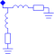
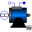

DamperCageSquirrel Cage |

|
Information
This information is part of the Modelica Standard Library maintained by the Modelica Association.
Model of an asymmetrical damper cage in two axis.
The damper cage has an optional (conditional) HeatPort, which can be enabled or disabled by the Boolean parameter useHeatPort. Temperatures of both axis are the same, both losses are added. Material properties alpha can be set differently for both d- and q-axis, although reference temperature for both resistances is the same.
Parameters (8)
| useHeatPort |
Value: false Type: Boolean Description: = true, if heatPort is enabled |
|---|---|
| T |
Value: T_ref Type: Temperature (K) Description: Fixed device temperature if useHeatPort = false |
| Lrsigmad |
Value: Type: Inductance (H) Description: Stray inductance in d-axis per phase translated to stator |
| Lrsigmaq |
Value: Type: Inductance (H) Description: Stray inductance in q-axis per phase translated to stator |
| Rrd |
Value: Type: Resistance (Ω) Description: Resistance in d-axis per phase translated to stator at T_ref |
| Rrq |
Value: Type: Resistance (Ω) Description: Resistance in q-axis per phase translated to stator at T_ref |
| T_ref |
Value: 293.15 Type: Temperature (K) Description: Reference temperature of both resistances in d- and q-axis |
| alpha |
Value: 0 Type: LinearTemperatureCoefficient (¹/K) Description: Temperature coefficient of both resistances in d- and q-axis at T_ref |
Connectors (4)
| heatPort |
Type: HeatPort_a Description: Conditional heat port |
|
|---|---|---|
| i |
Type: RealOutput[2] Description: Currents out from damper |
|
| lossPower |
Type: RealOutput Description: Damper losses |
|
| spacePhasor_r |
Type: SpacePhasor |
Used in Components (3)
|
Modelica.Electrical.Machines.BasicMachines.SynchronousMachines Permanent magnet synchronous machine |
|
|
Modelica.Electrical.Machines.BasicMachines.SynchronousMachines Electrical excited synchronous machine with damper cage |
|
|  |
Modelica.Electrical.Machines.BasicMachines.SynchronousMachines Synchronous machine with reluctance rotor and damper cage |